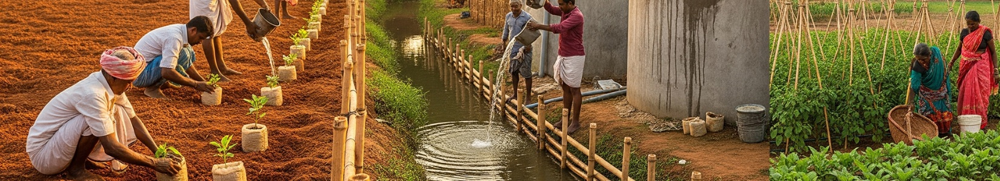
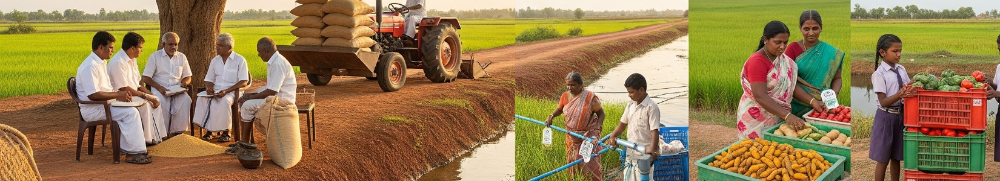
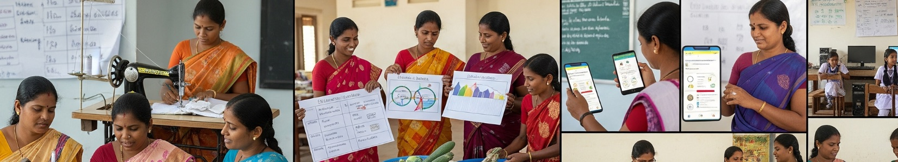
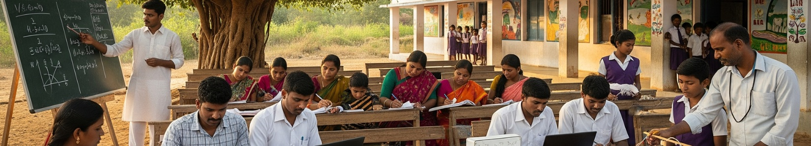
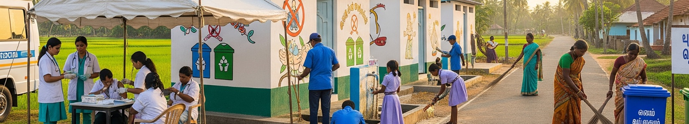
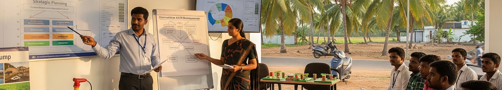

Environment & Resilience
Climate-resilient communities through land, water and biodiversity work.
Focus areas
What we do
Six interconnected sectors, one integrated approach to rural change — across Tamil Nadu since 2000.
Cumulative results across 20+ years of field work.
Our approach
Since 2000, COODU Trust has worked across six interconnected sectors to create lasting change in rural Tamil Nadu. Our holistic approach means communities develop comprehensively — environment, livelihoods, health, education and enterprise reinforcing one another.

Climate-resilient communities through land, water and biodiversity work.
Focus areas

Better rural livelihoods through organic, collective and tech-enabled farming.
Focus areas

Self-help groups, finance, leadership and enterprise for women.
Focus areas

Training, digital literacy and school support for the next generation.
Focus areas

Health services, safe water, sanitation and waste management.
Focus areas

Two decades of field expertise offered as advisory and HR services.
Focus areas